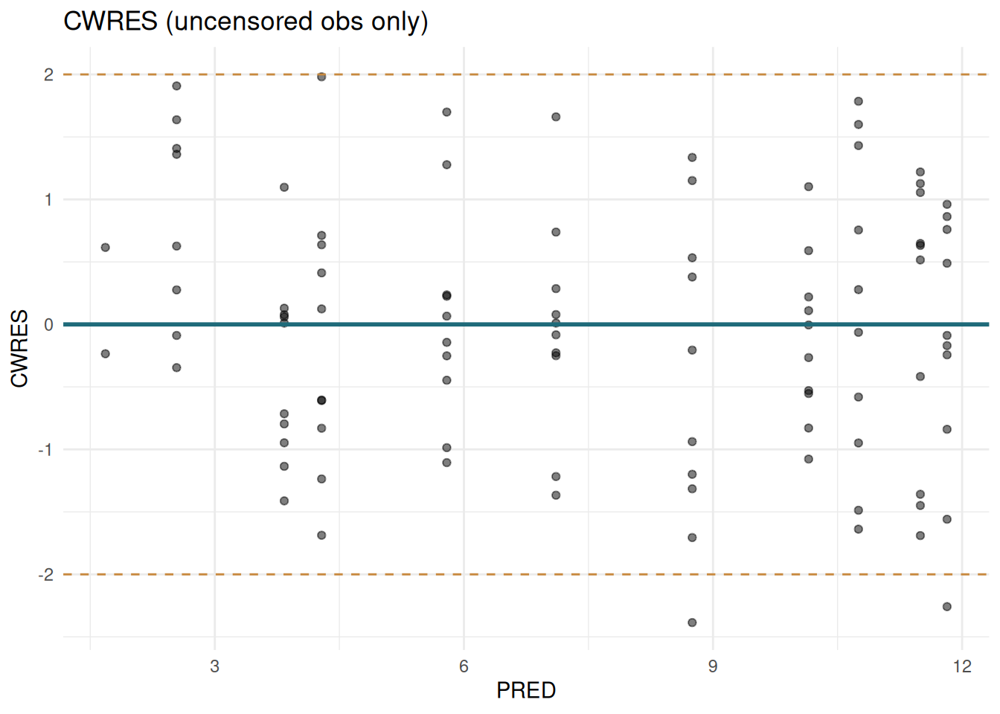
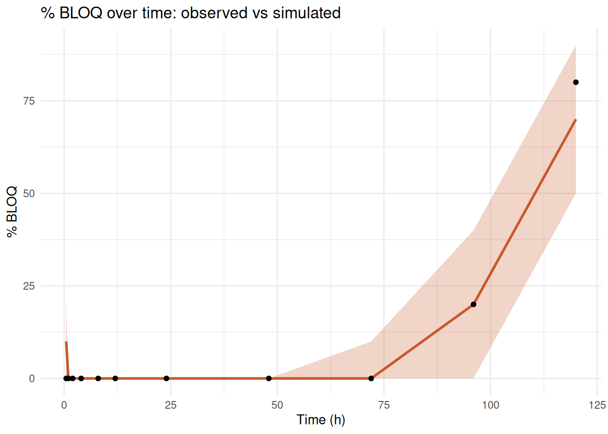

fit_m3 <- ferx_fit(ex$model, ex$data, bloq_method = "m3")13 BLOQ & M3 Method
13.1 Overview
Concentrations below the lower limit of quantification (LLOQ) are a routine challenge in PK/PD analysis. The simplest approach — discarding or replacing BLOQ values — introduces bias. Beal’s M3 method handles BLOQ observations correctly by integrating the likelihood over the censored region.
13.2 The M3 likelihood
For an uncensored observation:
\[\ell_i = \log f(y_i \mid \theta, \eta_i)\]
For a censored observation with LLOQ \(c\):
\[\ell_i = \log P(Y_i < c \mid \theta, \eta_i) = \log \Phi\!\left(\frac{c - \hat{y}_i}{\sigma_i}\right)\]
where \(\Phi\) is the standard normal CDF and \(\hat{y}_i\) is the individual prediction at the LLOQ time.
The M3 method treats each BLOQ observation as contributing its probability mass below the LLOQ rather than a point observation. This eliminates the downward bias in IPRED introduced by dropping or imputing BLOQ values.
13.3 Dataset requirements
Add a CENS column to your dataset:
| EVID | DV | CENS | Interpretation |
|---|---|---|---|
| 0 | observed value | 0 | Normal observation |
| 0 | LLOQ value | 1 | Censored — DV carries the LLOQ |
| 1 | AMT | 0 | Dose record |
The DV column for censored rows should contain the LLOQ value (e.g., 2.0 mg/L), not NA or 0.
13.4 Model specification
Enable M3 in [fit_options]:
[fit_options]
method = focei
covariance = true
bloq_method = m3Or override at run time:
Setting bloq_method = "m3" at the call level overrides whatever is in the model file. Use bloq_method = "drop" to explicitly drop BLOQ rows (not recommended in general).
13.5 Fitting with M3
library(ferx)
library(ggplot2)
library(dplyr)
ex <- ferx_example("warfarin_bloq")
obs <- read.csv(ex$data)
ferx_model_show(ex$model)# model: warfarin_bloq.ferx
# One-compartment oral PK model (warfarin) with M3 BLOQ likelihood.
# Observations below LLOQ=2.0 are flagged via the CENS column in the dataset
# (data/warfarin-bloq.csv); their DV cell carries the LLOQ value.
[parameters]
theta TVCL(0.2, 0.001, 10.0)
theta TVV(10.0, 0.1, 500.0)
theta TVKA(1.5, 0.01, 50.0)
omega ETA_CL ~ 0.09
omega ETA_V ~ 0.04
omega ETA_KA ~ 0.30
sigma PROP_ERR ~ 0.02
[individual_parameters]
CL = TVCL * exp(ETA_CL)
V = TVV * exp(ETA_V)
KA = TVKA * exp(ETA_KA)
[structural_model]
pk one_cpt_oral(cl=CL, v=V, ka=KA)
[error_model]
DV ~ proportional(PROP_ERR)
[fit_options]
method = focei
maxiter = 300
covariance = true
bloq_method = m3fit_m3 <- ferx_fit(ex$model, ex$data, method = "focei", covariance = TRUE)Mu-referencing detected for: ETA_CL, ETA_KA, ETA_Vsummary(fit_m3)--------------------------------------------------
ferx NLME Fit Summary
--------------------------------------------------
Model: warfarin_bloq
Dataset: warfarin_bloq
Converged: YES
Method: FOCEI
Gradient: auto (requested) -> fd (used)
ferx v0.1.0
Settings (model file / call-time override):
method focei [model only]
maxiter 300 [model only]
covariance true [model only]
bloq_method m3 [model only]
Structure: 1-cpt oral (TVCL, TVV, TVKA) | IIV: ETA_CL, ETA_V, ETA_KA | IOV: none | Residual: proportional
OFV: -217.3148 AIC: -203.3148 BIC: -184.4115
Subjects: 10 Obs: 110 Params: 7 Iter: 540
Shrinkage: ETA1=-5.4% ETA2=-5.2% ETA3=-5.3%
EPS shrinkage: 15.7%
Covariance: computed Cond: 55.3 | Wall time: 0.9s
Warnings:
* mu-ref: ETA_CL, ETA_KA, ETA_V
* 89 EBE fallback(s)
--------------------------------------------------13.6 Comparing M3 vs naive BLOQ removal
To quantify the bias from discarding BLOQ values, fit the same dataset both ways:
fit_drop <- ferx_fit(ex$model, ex$data, method = "focei",
bloq_method = "drop", covariance = FALSE)Warning: Model file [fit_options] sets `covariance = true` but ferx_fit()
argument overrides it with `false`. The call-time value will be used.Warning: Model file [fit_options] sets `bloq_method = m3` but ferx_fit()
argument overrides it with `drop`. The call-time value will be used.Mu-referencing detected for: ETA_CL, ETA_KA, ETA_VM3 OFV: -217.3Drop OFV: 27.3TVCL M3: 0.133TVCL drop: 0.126Typical finding: dropping BLOQ underestimates CL because the model predicts lower concentrations than truly exist at BLOQ times.
13.7 Diagnostics with censored data
Residuals (CWRES, IWRES) are only defined for uncensored observations. Filter before plotting:
sdtab <- fit_m3$sdtab |> filter(CENS == 0 | is.na(CENS))
ggplot(sdtab, aes(x = PRED, y = CWRES)) +
geom_point(alpha = 0.5) +
geom_hline(yintercept = 0, colour = "#1F6B7A", linewidth = 1) +
geom_hline(yintercept = c(-2, 2), linetype = "dashed", colour = "#C8893E") +
labs(x = "PRED", y = "CWRES", title = "CWRES (uncensored obs only)") +
theme_minimal()
13.8 VPC with censored data
For VPCs with BLOQ data, censor the simulated data at the same LLOQ:
lloq <- 2.0 # mg/L
sim <- ferx_simulate(ex$model, ex$data, n_sim = 500, seed = 42, fit = fit_m3)
# Apply same censoring to simulations
sim <- sim |> mutate(DV_SIM_CENS = ifelse(DV_SIM < lloq, lloq, DV_SIM),
CENS_SIM = ifelse(DV_SIM < lloq, 1L, 0L))
# Fraction BLOQ by time bin
pct_bloq_obs <- obs |>
filter(EVID == 0) |>
group_by(TIME) |>
summarise(pct = mean(CENS == 1) * 100, .groups = "drop")
pct_bloq_sim <- sim |>
group_by(SIM, TIME) |>
summarise(pct = mean(CENS_SIM == 1) * 100, .groups = "drop") |>
group_by(TIME) |>
summarise(lo = quantile(pct, 0.05), mid = median(pct),
hi = quantile(pct, 0.95), .groups = "drop")
ggplot() +
geom_ribbon(data = pct_bloq_sim, aes(x = TIME, ymin = lo, ymax = hi),
fill = "#C9582A", alpha = 0.25) +
geom_line(data = pct_bloq_sim, aes(x = TIME, y = mid),
colour = "#C9582A", linewidth = 1) +
geom_point(data = pct_bloq_obs, aes(x = TIME, y = pct)) +
labs(x = "Time (h)", y = "% BLOQ",
title = "% BLOQ over time: observed vs simulated") +
theme_minimal()